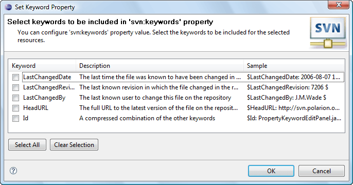

|
|
|
This facility provides a probability to select keywords to be added to a svn:keywords property of the selected resource. This property allows Subversion® to add dynamically specified information of the versioned file right to its content. To perform the action click on the 'Team>Set Keywords...' menu item of the resource pop-up menu or 'Set Keywords...' menu item of the 'SVN main menu group'.
This is how the 'Set Keywords Dialog' looks like:
